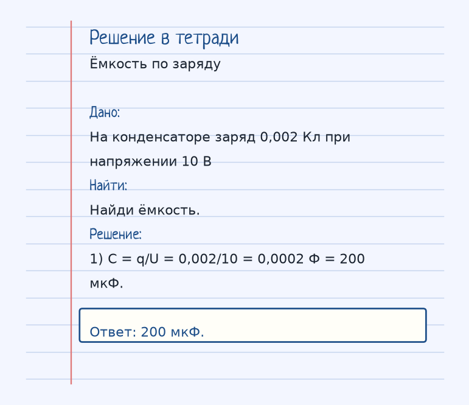

Найди, кто гонит заряд, и что ему мешает. Дальше — аккуратная арифметика, а не заклинание из букв. Ниже — как устроена тема «Конденсаторы», где обычно спотыкаются, и два разбора до ответа.
Показ к теме. Это условие, не шпаргалка.
Сначала смысл
Две пластины, разделенные диэлектриком. Способны накапливать заряд и энергию. Емкость показывает, сколько заряда может накопиться при данном напряжении.
Конденсатор — две пластины и между ними диэлектрик. На пластинах копятся равные по модулю разноименные заряды. Ёмкость C = q/U говорит, какой заряд приходится на один вольт. Геометрия плоского конденсатора: C = ε₀·ε·S / d, ε₀ = 8,85·10⁻¹² Ф/м. Больше площадь или диэлектрик с большим ε — больше ёмкость. Больше зазор d — меньше ёмкость.
Энергия запасённого поля W = CU²/2 = qU/2. Отключишь конденсатор от батареи — заряд q останется на пластинах. Оставишь подключённым — батарея держит напряжение U, а заряд может стечь или дотечь.
Ведро в аналогии: ёмкость — объём ведра, заряд — вода, напряжение — напор. Большое ведро при том же напоре принимает больше воды.
Как решать. Выпиши величины с рисунка к примеру «Ёмкость по заряду». Условие: На конденсаторе заряд 0,002 Кл при напряжении 10 В. Найди ёмкость. Дальше подставляй их в формулу этой темы и сверяй шаги с решением под картинкой — оно закрыто, пока не попробуешь сам. Второй рисунок, «Отключили батарею», тот же приём на других данных: Конденсатор зарядили и отключили от батареи. Что остаётся постоянным, если затем чуть раздвинуть пластины? Если оба примера сходятся, тему можно нести на контрольную.
Как читать формулу
C = q / U
C = (ε₀ · ε · S) / d
W = (C · U²) / 2 = (q · U) / 2
ε₀ = 8.85 · 10⁻¹² Ф/м — электрическая постоянная, ε — диэлектрическая проницаемость, S — площадь пластин, d — расстояние между ними.
ε₀ = 8,85·10⁻¹² Ф/м, ε — диэлектрическая проницаемость, S — площадь пластин, d — зазор. W = CU²/2 = qU/2.
Чтобы осталось в голове
Ведро. Чем больше ведро (емкость), тем больше воды (заряда) можно налить при том же напоре (напряжении).
Ведро: чем оно больше, тем больше воды нальётся при том же напоре. Ёмкость — «объём», напряжение — напор, заряд — вода.
Где обычно спотыкаются
Если отключить конденсатор от источника, заряд q сохраняется. Если оставить подключенным — сохраняется напряжение U.
Отключил от источника — сохраняется заряд q. Оставил подключённым — сохраняется напряжение U. Это разные режимы.
Дальше две задачи. Сначала схема. Когда сам набросаешь ход, открой тетрадь — там дано, перевод в СИ, шаги и ответ в рамке.
Разбор 1
Ёмкость по заряду
На конденсаторе заряд 0,002 Кл при напряжении 10 В. Найди ёмкость.
На схеме только условие. Ответа там нет — его ещё надо получить.
Смотри на порядок, не на красивое число: сначала единицы, потом формула, потом ответ.
Дано. На конденсаторе заряд 0,002 Кл при напряжении 10 В
В СИ.
Найти. Найди ёмкость.
Решение.
C = q/U = 0,002/10 = 0,0002 Ф = 200 мкФ.
200 мкФ.

Разбор 2
Отключили батарею
Конденсатор зарядили и отключили от батареи. Что остаётся постоянным, если затем чуть раздвинуть пластины?
На схеме только условие. Ответа там нет — его ещё надо получить.
Смотри на порядок, не на красивое число: сначала единицы, потом формула, потом ответ.
Дано. Конденсатор зарядили и отключили от батареи
В СИ.
Найти. Что остаётся постоянным, если затем чуть раздвинуть пластины?
Решение.
Заряд q некуда стечь, он сохраняется.
Ёмкость при большем d падает, а напряжение U = q/C вырастет.